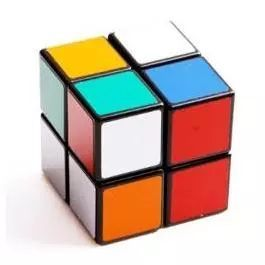
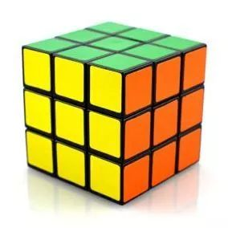
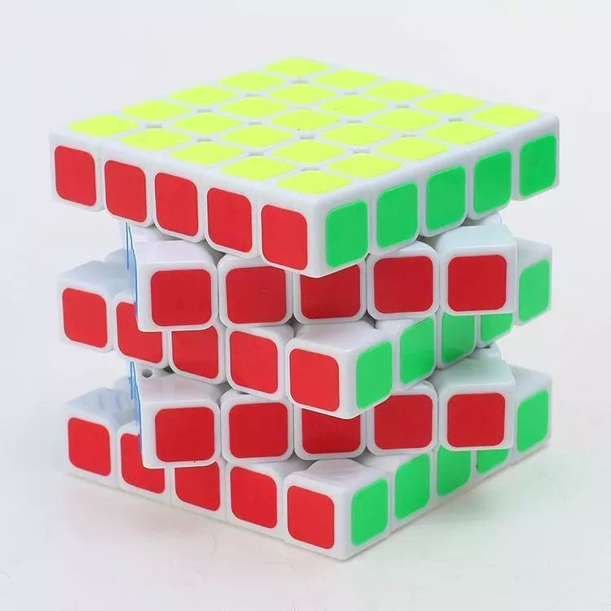
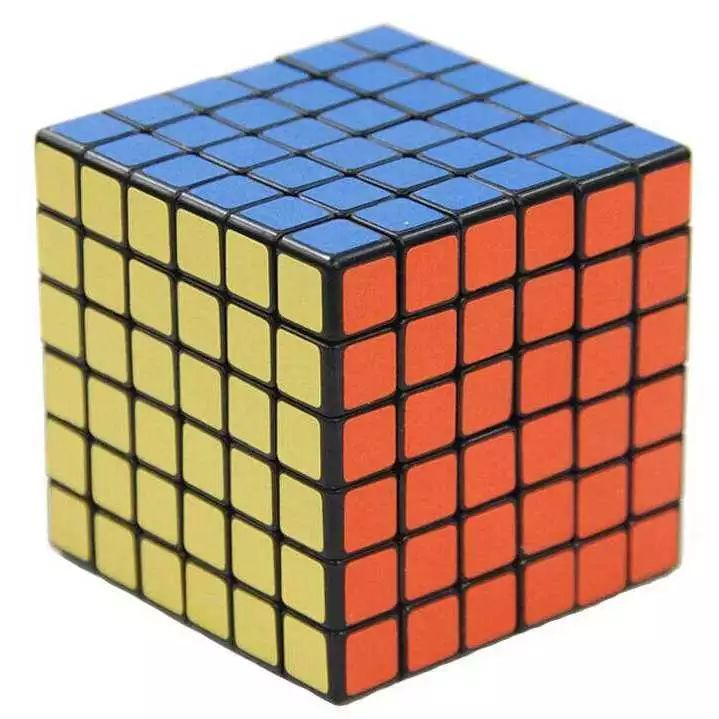
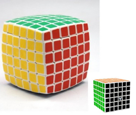
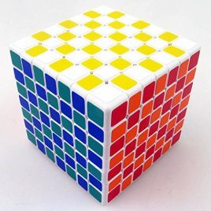
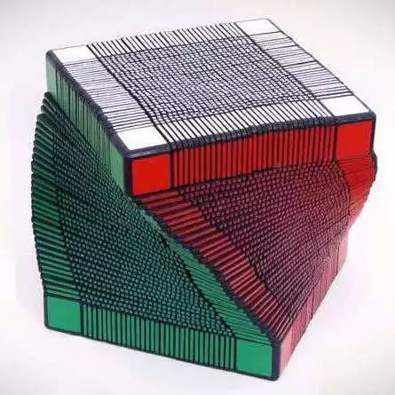

五. 魔方品牌及推荐
下面列举一些魔方品牌给大家瞧瞧。
1、东贤

2、Rubik

3、国甲魔方

4、大雁魔方

5、百变魔王

6、永骏

7、奇艺

8、gan

9、圣手

10、魔域文化

老铁看完这些魔方你心动了吗，那就买它！买它！买它！
这里有一些你想知道的一些有关魔方的资料哟！
魔方（Rubik's Cube），又叫鲁比克方块，台湾地区称之为魔术方块，香港地区称之为扭计骰，最早是由匈牙利布达佩斯建筑学院厄尔诺·鲁比克（Rubik Ernő）教授于1974年发明的。魔方竞速是一项手部极限运动。
通常意义下的魔方，是指狭义的三阶魔方。三阶魔方形状通常是正方体，由有弹性的硬塑料制成。常规竞速玩法是将魔方打乱，然后在最短的时间内复原。截至2020年，三阶魔方还原官方世界纪录是由中国的杜宇生在2018年11月24日于芜湖赛打破的纪录，单次3.475秒。
广义的魔方，指各类可以通过转动打乱和复原的几何体。
魔方与华容道、独立钻石棋一起被国外智力专家并称为智力游戏界的三大不可思议，而魔方受欢迎的程度更是智力游戏界的奇迹。
二阶魔方的英文官方名字叫du做Pocket Rubik's Cube或Mini Cube，中文zhi直译叫做“口袋魔方”。它每个边有两个方块dao，官方版本之一魔方边长为40毫米，另外一个由东贤开发的轴型二阶魔方则为50毫米。二阶魔方的总变化数为 3,674,160 或者大约 3.67×10^6。二阶魔方（Pocket Cube）又称口袋魔方、迷你魔方、小魔方、冰块魔方 ，为2×2×2的立方体结构。本身只有8个角块，没有其他结构的方块。结构与三阶魔方相近， 可以以复原三阶魔方的公式进行复原。
三阶魔方的英文官方名字叫做Rubik's Cube，也就是用鲁比克教授的名字命名的，是目前最普遍的魔方种类。它每个边有三个方块，官方版本魔方边长为57毫米，三阶魔方的总变化数是(8!x38x12!x212)/(2x2x3)=43,252,003,274,489,856,000或者约等于4.3x10^19.三阶魔方由一个连接着六个中心块的中心轴以及结构不一的20个方块构成，当它们连接在一起的时候会形成一个整体，并且任何一面都可水平转动而不影响到其他方块。
四阶魔方的英文官方名字叫做Rubik's Revenge相对于三阶来说就要复杂的多，它的构成分为两类，一类中心是一个球体，每个外围的小块连接着中心球的滑轨，在运动时候会沿着用力方向在滑轨上滑动。第二类是以轴为核心的四阶魔方，这类魔方的构成非常复杂，除了中心球和外围块外还有很多附加件。作为竞速运动来说第二种构成的四阶魔方运动速度快，不易在高速转动中卡住。 4阶魔方的英文官方名字叫做Rubik's Revenge，直译过来是“魔方的复仇”。官方版本大概边长为67毫米，Mefferts版本为60毫米。四阶魔方被认为是2-5阶魔方中最不好复原的，虽然5阶魔方的变化种类比4阶多，但是4阶魔方的中心块并不固定，也就不能用一般的方法进行复原。即7,401,196,841,564,901,869,874,093,974,498,574,336,000,000,000种变化。
五阶魔方的构成则更甚于四阶魔方。每发明一种新的高阶魔方都要经过很长时间，因为不仅要考虑到项目的可行性，还要考虑如果将魔方作出来后能不能稳定的用于转动。正是由于这个原因，五阶魔方是官方公布的最高阶魔方，其结构也不是一般的爱好者可以想象出来的。 2008年9月14日时的走进科学节目中张腾岳也说了:"我看谁能够将复杂的五阶魔方还原至六面同色,那他智商要上200了."这里同时体现出了五阶魔方的难.五阶魔方的英文名字叫做Professor's Cube，直译过来是“专家(玩)的魔方”，也说明了它的难度，最好的魔方爱好者能在1分半钟左右就把五阶魔方复原。五阶魔方总共有8个角块、72个边块（两种类型）和54个中心块（48块可以移动，6块固定）。
五阶魔方的中心块为3×3结构，所以其每种颜色都有4块中心块是等价的，即中心块的变化状态为(24!(4!6))2种。其24个外侧边块的位置不能随意移动，所以总共有24!种变幻状态。12个中心边块中有11个可以互换位置，所以总共有12!/2×211种变化状态。五阶魔方的总变化状态数为282,870,942,277,741,856,536,180,333,107,150,328,293,127,731,985,672,134,721,536,000,000,000,000,000种变化。
六阶魔方是由希腊的Olimpic方块公司出产，方块本身评价不太好，常见的评价为容易POP（飞棱）：指在复原中魔方的某些组成部分从魔方上面脱离的情况，如果是出现在比赛中作为无效的复原过程，中心轴不坚固等……
七阶魔方同样是由希腊Olimpic方块公司出产。同时兼备了收藏，鉴赏及实用价值，方块本身为圆弧型，因若持续以正方体设计，方块的零件将无法固定而散开。同时这也是世界上公开并证实存在的最高阶魔方。
不会吧不会吧你在数下面这个魔方有几层！！！ 用你的小手摸摸它，它会告诉你哟！
| 种类 | 用时 | 人名 | 国家 |
| 二阶魔方单次 | 0.49s | Maciej Czapiewski | 波兰 |
| 三阶魔方单次 | 3.47s | 杜宇生 | 中国 |
| 四阶魔方单次 | 17.42s | Sebastian Weyer | 德国 |
| 五阶魔方单次 | 34.92s | Max Park | 美国 |
| 种类 | 时间 | 人名 | 国家 |
| 三阶速拧单次 | 3.47s | 杜宇生 | 中国 |
| 三阶速拧平均 | 5.53s | Feliks Zemdegs（菲神） | 澳大利亚 |
| 三阶盲拧单次 | 15.50s | Max Hilliard | 美国 |
| 三阶单手单次 | 6.82s | Max Park | 美国 |
| 三阶最少步 | 16步 | Sebastiano Tronto | 意大利 |
看完这些数据是不是眼花缭乱了，那咱来波干货吧！
接下来你将会看到魔方界的神级人物，国人称他为--菲神。
视频内容是菲神当前官方最好成绩的现场视频以及他的个人短片。
这里介绍魔方的入门玩法七步还原法
如果你已经熟练掌握了三阶的入门玩法，不如试试 CFOP 的速拧公式，你会发现魔方的复原远不止这些。是的学无止尽，你会发现公式是学不完的，而我们要做的，就是找到最适合我们的自己公式并熟练的掌握它们，不久的将来，你会感受到爆手速的快感!!! 加油！
更多的魔方教程请推荐查看魔方小站。这里是大多数魔友童年的回忆！
1、东贤
2、Rubik
3、国甲魔方
4、大雁魔方
5、百变魔王
6、永骏
7、奇艺
8、gan
9、圣手
10、魔域文化
老铁看完这些魔方你心动了吗，那就买它！买它！买它！
1、训练手眼协调，提高记忆力。魔方可以培养人的动手和动脑的能力，并且极大程度上训练人的记忆力，判断力以及空间想象力。（如DIY魔方，速拧，盲拧）。
2、玩魔方能开发人的记忆力、理解力、想象力、观察力、思维力。魔方与建筑学，立体几何，机械、机电一体化，产品设计，化学，材料学，计算机分析系统，经济学，传波学，美学等都相联系。
3、转魔方多为手指运动，而这种肢体末端的运动对全身的内循环都有促进作用，有益身体健康。
4、魔方的练习是对意志的磨砺，它有竞技运动的一般特点且对于思维能力有极高的要求。
5、魔方的还原过程是一个观测、动作、思维集于一体的过程，而在快速还原过程中必须保持注意力的高度集中，手部运动的协调及思维的高速运转。
下面的视频发人深省，介绍Max Park，美国魔方选手，从自闭症儿童到2017年魔方世界锦标赛三阶速拧冠军的故事。